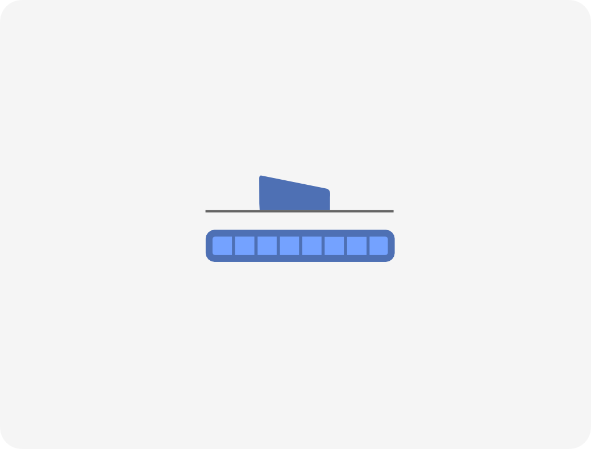

Audio compression
DSP acceleration

Website
Audio compression: ADPCM

Website for receivers


DSP acceleration
csdr
csdr
#!/bin/bash
rtl_sdr -s 2400000 -f 89300000 -g 20 -

csdr
#!/bin/bash
rtl_sdr -s 2400000 -f 89300000 -g 20 - | csdr convert_u8_f

csdr
#!/bin/bash
rtl_sdr -s 2400000 -f 89300000 -g 20 - | csdr convert_u8_f | \
csdr shift_addition_cc -0.085

csdr
#!/bin/bash
rtl_sdr -s 2400000 -f 89300000 -g 20 - | csdr convert_u8_f | \
csdr shift_addition_cc -0.085 | csdr fir_decimate_cc 10 0.05 HAMMING
csdr
#!/bin/bash
rtl_sdr -s 2400000 -f 89300000 -g 20 - | csdr convert_u8_f | \
csdr shift_addition_cc -0.085 | csdr fir_decimate_cc 10 0.05 HAMMING | \
csdr fmdemod_quadri_cf
csdr
#!/bin/bash
rtl_sdr -s 2400000 -f 89300000 -g 20 - | csdr convert_u8_f | \
csdr shift_addition_cc -0.085 | csdr fir_decimate_cc 10 0.05 HAMMING | \
csdr fmdemod_quadri_cf | csdr fractional_decimator_ff 5 | \
csdr deemphasis_wfm_ff 48000 50e-6 | csdr convert_f_s16 | \
mplayer -rawaudio samplesize=2:channels=1:rate=48000 \
-cache 1024 -quiet -demuxer rawaudio -
Signal path

Digital downconverter

Simple C version

Simple C version
Simple C version
Simple C version
NEON SIMD
(Inline assembly)


2122ms → 113ms
×18.7 speedup
Mark Borgerding, "Turning Overlap-Save into a Multiband
Mixing, Downsampling Filter Bank",
IEEE Signal Processing Magazine, March 2006





Various other things
gr-osmosdr, etc.
https://github.com/ha7ilm/hpsdrtool


NEON SIMD
NEON SIMD
NEON SIMD
NEON SIMD
NEON SIMD
NEON SIMD
NEON SIMD
GPGPU (CUDA)
GPGPU (CUDA)
GPGPU (CUDA)
GPGPU (CUDA)
×18.7 speedup
IEEE Signal Processing Magazine, March 2006
Digital modes
Hardware support
qtcsdr
Digital modes: RTTY
Hardware support
HackRF, AFEDRI SDR, SDRPlay,gr-osmosdr, etc.
hpsdrtool
➜ ~ hpsdrtool
hpsdrtool <hpsdr_metis_ip> [--freq <freq_in_hz>]
[--preamp] [--no-iq-output]
qtcsdr
Software (CLI)
- WsprryPi: a WSPR beacon
https://github.com/JamesP6000/WsprryPi
- RPITX: transmit an I/Q signal
https://github.com/F5OEO/rpitx
QRPi
https://www.tapr.org/kits_20M-wspr-pi.htmlqtcsdr
RTL-SDR + RPITX = transceiver
qtcsdr (RX)
qtcsdr (TX)
qtcsdr
https://github.com/ha7ilm/qtcsdr